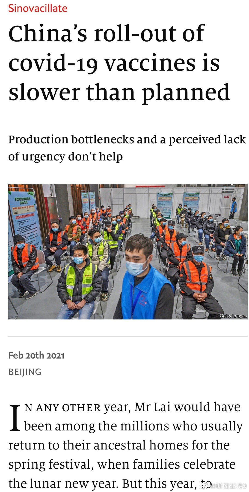

没搞明白著名科普作家 @Serpens 这演的是哪一出，还是被黑了么？

斯图亚特9
2021-02-22

斯图亚特9
2021-02-22
两个研究显示，已经占据超过一半加州确诊病例的“加州变异”不仅传染性更强，而且会造成更大比例的重症。并且对已得病人的抗体反应弱一些。对疫苗的反应未知。
斯图亚特9
2021-02-22

斯图亚特9
2021-02-22
回复@maryanne351:国门有一天得打开吧，五个一得结束，国际交流得重启，外国人到中国旅游得恢复吧？没有广泛接种疫苗有没有可能完全重启国门呢？不知道规划是什么样的。//@maryanne351:为啥非要以接种疫苗为标准呢？中国本来就很少的病例了，而且基本没有死亡。
@斯图亚特9:
《经济学人》一篇文章讨论为什么中国的疫苗接种进度不行（是不是真不行也搞不清）。文章认为只要原因是疫苗产能还是提不上去——对任何国家大量生产灭活疫苗都很困难，另一个原因是中国觉得不着急，反正没有什么病毒。
- 